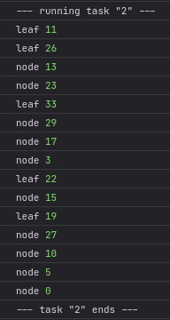
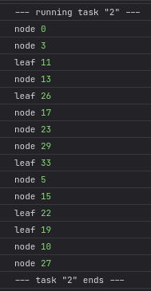

- 1 -
-
const _instanceProto = { c: 'c', d: 'd' } function InstanceCreator() { this.a = 'a' this.b = 'b' } InstanceCreator.prototype = _instanceProto const instance = new InstanceCreator() for ( const key in instance ) { // вывести в консоль a, b, c, d } for ( const key in instance ) { // вывести в консоль a, b } for ( const key in instance ) { // вывести в консоль c, d }
- 2 -
-
Имеется структура "дерево" вида
____ 0 ____ / \ _ 3 _ _ 5 _ / | \ / | \ 11 13 17 15 19 10 / / \ \ | 26 23 29 22 27 / 33см.
Состоит из "веток" (./index.jsTreeNode) и "листьев" (TreeLeaf), которые могут быть на этих ветках. "Ветки" также могут быть на "ветках". -
Необходимо написать реализацию функций
logToDepthиlogFromDepth. Обе просто выводят тип элемента дерева (nodeилиleaf) и его индекс (свойство.x). Первая функция выводит элементы "в глубину", т.е. начиная с самого верхнего вниз. Вторая - наоборот, от сначала выводит в консоль нижние элементы, после, поднимаясь, верхние. -
Результаты выполнения обоих функций:
  -
Для обхода внутренних элементов TreeNode необходимо использовать
for ... of -
В файле
./index.jsу классаMyBestAwesomeArrayEverреализовать методsomeна основе реализованного в первом задании методаfind